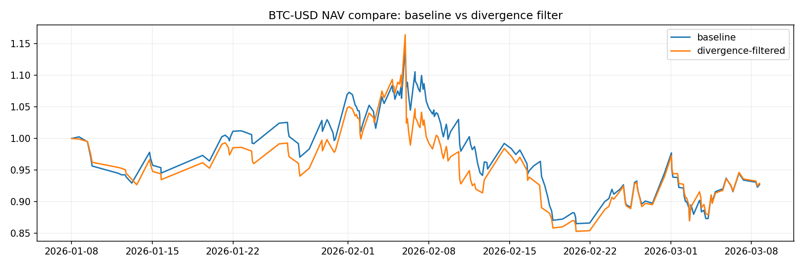
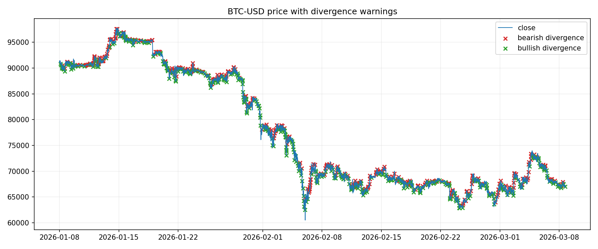
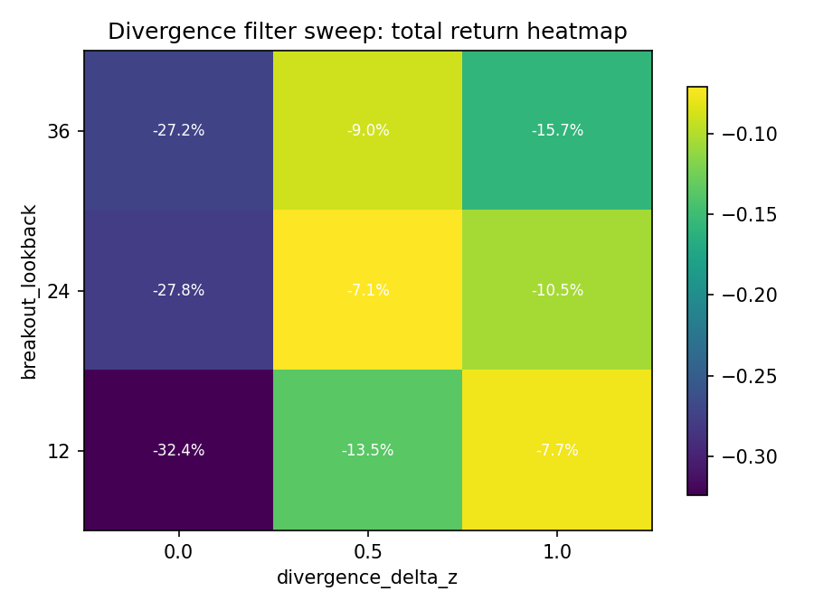
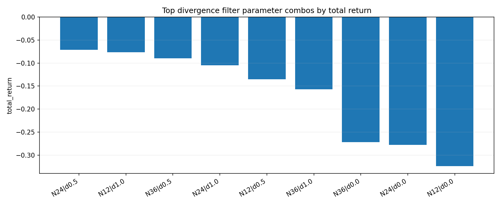

Ticker: BTC-USD · period=60d · interval=5m · generated_at=2026-03-08 17:01 UTC
这份报告回答的问题不是“量价背离能不能单独抓顶/抓底”，而是：把它作为 multi_tf_momentum 的过滤器，能不能减少弱量突破带来的低质量追单？
close[t] > rolling_high(close, N)[t-1]vol_z 低于上一次向上突破的 vol_z - deltavol_z < z_confirmbearish_divergence_warning，并在接下来若干根 bar 内屏蔽追多| variant | breakout_lookback | divergence_delta_z | z_confirm | warning_active_bars | bearish_divergence_events | bullish_divergence_events | filtered_signal_count | trades | win_rate | avg_ret | median_ret | total_return | max_drawdown | long_trades | short_trades |
|---|---|---|---|---|---|---|---|---|---|---|---|---|---|---|---|
| baseline | NaN | NaN | NaN | NaN | NaN | NaN | NaN | 195 | 0.3282 | -0.0002 | -0.0058 | -0.0731 | -0.2446 | 97 | 98 |
| divergence_filter | 24.0000 | 0.5000 | 0.5000 | 3.0000 | 392.0000 | 412.0000 | 768.0000 | 181 | 0.3425 | -0.0002 | -0.0056 | -0.0710 | -0.2675 | 90 | 91 |


| variant | breakout_lookback | divergence_delta_z | z_confirm | warning_active_bars | bearish_divergence_events | bullish_divergence_events | filtered_signal_count | long_filtered_count | short_filtered_count | symbol | trades | win_rate | avg_ret | median_ret | total_return | max_drawdown | long_trades | short_trades |
|---|---|---|---|---|---|---|---|---|---|---|---|---|---|---|---|---|---|---|
| divergence_filter | 24 | 0.5000 | 0.5000 | 3 | 392 | 412 | 768 | 369 | 399 | BTC-USD | 181 | 0.3425 | -0.0002 | -0.0056 | -0.0710 | -0.2675 | 90 | 91 |
| divergence_filter | 12 | 1.0000 | 0.5000 | 3 | 394 | 420 | 618 | 290 | 328 | BTC-USD | 183 | 0.3497 | -0.0003 | -0.0058 | -0.0766 | -0.2815 | 91 | 92 |
| divergence_filter | 36 | 0.5000 | 0.5000 | 3 | 315 | 322 | 696 | 330 | 366 | BTC-USD | 185 | 0.3405 | -0.0003 | -0.0054 | -0.0897 | -0.2948 | 92 | 93 |
| divergence_filter | 24 | 1.0000 | 0.5000 | 3 | 285 | 307 | 597 | 289 | 308 | BTC-USD | 185 | 0.3405 | -0.0004 | -0.0054 | -0.1046 | -0.3123 | 92 | 93 |
| divergence_filter | 12 | 0.5000 | 0.5000 | 3 | 556 | 584 | 804 | 381 | 423 | BTC-USD | 179 | 0.3464 | -0.0006 | -0.0060 | -0.1353 | -0.2670 | 89 | 90 |
| divergence_filter | 36 | 1.0000 | 0.5000 | 3 | 225 | 241 | 547 | 257 | 290 | BTC-USD | 189 | 0.3333 | -0.0007 | -0.0054 | -0.1572 | -0.3444 | 94 | 95 |
| divergence_filter | 36 | 0.0000 | 0.5000 | 3 | 496 | 515 | 995 | 467 | 528 | BTC-USD | 183 | 0.3279 | -0.0016 | -0.0065 | -0.2715 | -0.3379 | 91 | 92 |
| divergence_filter | 24 | 0.0000 | 0.5000 | 3 | 635 | 674 | 1130 | 535 | 595 | BTC-USD | 173 | 0.3064 | -0.0017 | -0.0072 | -0.2775 | -0.2906 | 86 | 87 |
| divergence_filter | 12 | 0.0000 | 0.5000 | 3 | 962 | 976 | 1174 | 555 | 619 | BTC-USD | 171 | 0.2924 | -0.0021 | -0.0081 | -0.3239 | -0.3677 | 85 | 86 |


| variant | breakout_lookback | divergence_delta_z | z_confirm | warning_active_bars | bearish_divergence_events | bullish_divergence_events | filtered_signal_count | long_filtered_count | short_filtered_count | symbol | trades | win_rate | avg_ret | median_ret | total_return | max_drawdown | long_trades | short_trades |
|---|---|---|---|---|---|---|---|---|---|---|---|---|---|---|---|---|---|---|
| divergence_filter | 24 | 0.5000 | 0.5000 | 3 | 392 | 412 | 768 | 369 | 399 | BTC-USD | 181 | 0.3425 | -0.0002 | -0.0056 | -0.0710 | -0.2675 | 90 | 91 |
| divergence_filter | 12 | 1.0000 | 0.5000 | 3 | 394 | 420 | 618 | 290 | 328 | BTC-USD | 183 | 0.3497 | -0.0003 | -0.0058 | -0.0766 | -0.2815 | 91 | 92 |
| divergence_filter | 36 | 0.5000 | 0.5000 | 3 | 315 | 322 | 696 | 330 | 366 | BTC-USD | 185 | 0.3405 | -0.0003 | -0.0054 | -0.0897 | -0.2948 | 92 | 93 |
| divergence_filter | 24 | 1.0000 | 0.5000 | 3 | 285 | 307 | 597 | 289 | 308 | BTC-USD | 185 | 0.3405 | -0.0004 | -0.0054 | -0.1046 | -0.3123 | 92 | 93 |
| divergence_filter | 12 | 0.5000 | 0.5000 | 3 | 556 | 584 | 804 | 381 | 423 | BTC-USD | 179 | 0.3464 | -0.0006 | -0.0060 | -0.1353 | -0.2670 | 89 | 90 |
结论：量价背离更适合做过滤器，而不是直接做反转主信号。这版实现专门回答‘要不要追这个弱量突破’。
动作：先把它当过滤器研究，不要一上来把它当独立反转系统。
结论：当前样本里，最优过滤组合是 breakout_lookback=24, divergence_delta_z=0.5，warning_active_bars=3。
动作：后续先围绕这个参数结构做小步扩展，不要一下子引入摆点背离、OBV、MFI 全家桶。
结论：当前样本里，过滤器相对裸动量有增益。
动作：如果改善主要来自减少低质量追单，而不是极端偶然行情，就可以继续保留。
结论：如果热图里一整片参数都差不多，说明它更像稳定过滤器；如果只有一个点好看，说明还要警惕过拟合。
动作：看热图是不是“有一片能打”，而不是只看单点冠军。
结论：研究上先把它当作趋势过滤器保留；后续再考虑更复杂的摆点背离（baseline B）。
动作：当前先把 baseline A 固化进工程结构；baseline B（摆点背离）进入后续学习地图，不急着现在展开。